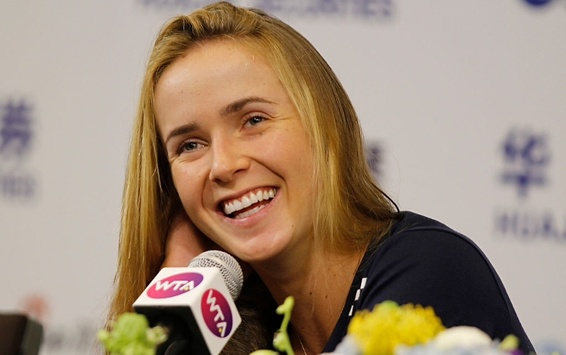

Элина Свитолина продолжает радовать растущую армию своих болельщиков. В прошлом году украинка зарекомендовала себя грозой первых ракеток мира, обыграв и Серену Уильямс, и сместившую ее с трона Анжелик Кербер, дошла до четвертьфинала Олимпиады и поднялась на рекордную для Украины 14-ю строчку в рейтинге WTA. Уже в сезоне нынешнем Элина вновь огорчила Кербер и даже успела пополнить коллекцию новым трофеем, выиграв турнир в Тайбэе. Еще одним достижением Свитолиной стало возвращение в сборную и блестящая игра на Кубке Федерации, где ее две победы над соперницами из Австралии помогли Украине выйти в плей-офф Мировой группы.
— Элина, вы год не играли за сборную в Кубке Федерации. Почему вернулись?
— Во-первых, потому что играли дома в Украине, в Харькове. Все-таки я там росла, взрослела и до сих пор возвращаюсь тренироваться в «Superior Golf & Spa Resort» к моему генеральному спонсору Юрию Сапронову. Харьков – особенное, знаковое место для меня. В этом городе я формировалась как теннисистка – 2,5 года упорных тренировок и первые профессиональные турниры в этом городе. Мне очень хочется популяризировать теннис в Украине. Играть за сборную я люблю, но эти эмоции уже немного подзабылись. Не ожидала я такого ажиотажа в Харькове – полный зал, много фанатов. Невероятная обстановка. На Локомотиве, где мы играли ФедКап, корт положили специально для нашего матча. Раньше я там не играла, но присутствовала на матче, когда играли сестры Бондаренко против Бельгии. Это был 2008 год, я была очень маленькой. Тогда мне казался зал в Локомотиве огромным. А вот сейчас приехала и поняла, что не такой уж он и большой. Тем более я играла первым номером. Вообще эмоции у меня остались невероятными.
— Статус лидера давит психологически?
— И давит, и мотивирует. С одной стороны, присутствует гордость, а с другой – от тебя ждут только победы. Люди пришли посмотреть на меня и ожидают, что я обыграю любого (смеется).

Элина Свитолина, Sport Arena
— В этом межсезонье вы прекратили сотрудничество с британцем Ианом Хьюзом, с которым работали больше двух лет. Какими были главные заслуги этого специалиста?
— Он проделал огромную работу, чтобы я стала более профессиональной как в корте, так и вне его. Я очень рада, что встретила его, когда была в рейтинге 45-й. Он меня направил на верный путь. Ведь это с ним я попала в топ-15. Иен брал на себя много организационных моментов, чтобы я вообще не отвлекалась ни на что, кроме тенниса. Я всегда знала, что на него можно положиться. Он держал под контролем многие организационные вопросы внутри команды.
— Что переживает спортсмен, когда нужно прощаться с тренером?
— Это было тяжело, но я думала только о будущем. Решение было все же обоюдным. Это был конец сезона, мы проанализировали его, все обсудили и попрощались.
— Почему выбор пал на испанца Габриэля Урпи?
— У меня два равноценных тренера. С Урпи работает еще Тьерри Аскьон. Мне нравится их подход. Тяжело объяснить, потому что моменты профессионально очень тонкие. Мне важно было узнать их мнение. Габриэль больше работал в женском теннисе, Тьерри до сих пор помогает Тсонга. Урпи, кстати, я сейчас делю с Николя Маю.
— Вы поменяли всю команду, но оставили фитнес-тренера Оливера Фаулза?
— Мы начали только полгода назад. Тогда мне очень нужен был фитнес-тренер, и Иан помог мне его найти. На данном этапе Оливер меня всем устраивает.
— Насколько эти тренеры дороже Хьюза?
— У нас совсем разные условия. Иан ездил со мной каждую неделю, а с Урпи и Аскьоном я более самостоятельна, но связь мы держим постоянно. Эта была одна из задач. Теперь путешествует со мной всегда только спарринг-партнер.
Элина Свитолина, Getty Images
— Что можете сказать о Жюстин Энен, с которой проработали год?
— Вспоминаю ее только с позитивной стороны. Она мне помогла своим опытом. Сейчас мы, правда, не общаемся, потому что Жюстин родила второго ребенка и уделяет время семье.
— Ваше сильное место?
— Психология. Я всегда борюсь до конца – за каждый розыгрыш, за каждый мяч. Слышала это даже от других игроков (улыбается).
— А слабое?
— Я вам не буду рассказывать свои слабые места (смеется).
— Вы больше любите критику или похвалу?
— И то, и другое. Моя команда и критикует меня, и хвалит. Мне нравится такой баланс.
— За все эти годы, пока вы потихоньку подбирались к топ-15, например, Эжени Бушар и Белинда Бенчич успели резко ворваться в топ-10 и также быстро оттуда выпасть. Какая из этих стратегий более оправдана?
— Даже не думаю об этом. У Эжени и Белинды совсем другая дорога. Они травмировались очень рано, прошли через стресс. Телу еще непривычно играть на таком высоком уровне, ведь в топ-10 в основном взрослые теннисистки. Потом им нужно было год-полтора, чтобы вернуться на прежний уровень. Я же стараюсь быть стабильной – без сильных спадов. Всегда выкладываюсь на 100%, а там уже как сложится.
Элина Свитолина, Getty Images
— Когда вы еще были юниоркой, то говорили, что никогда больше не поедете в Нигерию из-за большой опасности для жизни. В конце прошлого сезона вы съездили в Москву, из-за чего даже получали угрозы. Теперь Москва тоже в черном списке?
— В Нигерии все было гораздо страшней – стрельба, опасный контингент. Москву я не заносила в черный список, а тот инцидент просто забыла. Если этот вопрос всплывет снова – будем думать, ехать ли туда.
— Почти каждая украинская теннисистка называет своей лучшей подругу Олю Савчук. Вы тоже проводите с ней много времени. В чем секрет Оли?
— В туре очень сложно иметь друзей. Все время я нахожусь со своей командой, а когда появляется один свободный день, мы с Олей идем на шопинг или в кино. У меня узкий круг общения, ей я доверяю, плюс она веселая.
— Вас часто можно застать с книгой. Если бы у вас появилась возможность, какую бы книгу написали?
— Опыт путешествий. Например, как лучше подготовиться или собраться за 5 секунд (смеется). Бывает же, что я в пути по 2-3 раза в неделю, потому об этом знаю все!
— Героиней какой книги можете себя представить?
— Давно не читала художественную литературу. Мне больше нравятся эзотерические книги. Недавно вот перечитывала в третий раз «Алхимик» Паоло Коэльо. Она меня мотивирует для дальнейшего продвижения.
— На что больше всего не хватает времени?
— На семью – родителей и бабушку. Новый год лет 6-7 мы точно вместе не отмечали.
— Раньше по европейским турнирам с вами ездили родители. А сейчас?
— Очень редко. У меня намного больше команда, мы сосредоточены на работе. Я не должна отвлекаться.
— Папе вы часто привозите вино. Себя с каким бы вином сравнили?
— Белое, Шато д’Икем (Chateau d’Yquem)! Бордо из Франции. Я же в академии в Ницце столько времени провела.
Элина Свитолина, Getty Images
— На турнире в Тайване, который вы выиграли, болельщики сходили с ума – рисовали баннеры, поддерживали вас изо всех сил. Наверняка что-то дарили?
— Ой, да, очень много! Я их все привезла домой – желто-синее сердце с надписями, кружки, книжечки, майки, сладости. Их сразу позабирал у меня фитнес-тренер и съел (смеется). В книжечках даже старались писать на русском. Самый интересный же подарок у меня был в Японии – билет в музей Снупи. Мне понравилось! В музее рассказывают историю этого мультика, все ярко, красиво.
— На Олимпиаде вы подружились со многими спортсменами украинской сборной, вместе ходили на разные соревнования. Еще поддерживаете связь или после отъезда из Рио дружба закончилась?
— Да, разъехались и почти не общаемся, но я продолжаю следить за нашими. В Рио многие из сборной подходили ко мне и спрашивали, мол, это вы – наша теннисистка Элина Свитолина? Я знаю, что они за мной следят, и я тоже интересуюсь их выступлениями.
БЛИЦ-ОПРОС
— Кошка или собака?
— Собака
— Лето или зима?
— Лето.
— Брюки или юбка?
— Брюки?
— Джокович или Маррей?
— Маррей.
— Сок или вода?
— Вода.
— Конфеты или фрукты?
— Карамель! (Смеется)
— Грунт или хард?
— Хард.
.